The complete DevHub guide.
Every screen, every button — what it is, where it lives, and how to use it, with a screenshot for each. If you have never opened DevHub before, start at the top and read straight down.
What is DevHub? It is a desktop app — think “GitHub Desktop for Creatio.” It puts a real
interface over three command-line tools you would otherwise type by hand: clio (Creatio), git,
and gh (GitHub). You manage environments, version-control packages, run SQL, compare and move data, and
deploy — without living in a terminal. DevHub stores no passwords; clio owns those.
Getting started
Install the app, point it at your tools, and register your first environment. This is a one-time setup.
1Install DevHub
Download the signed installer from the home page.
On Windows, run the .exe (or .msi). On macOS, open the
universal .dmg; the first launch needs right-click → Open until the build is notarized.
Updates are signed and arrive automatically — see Safety & updates.
2Install the command-line tools DevHub drives
DevHub does not replace clio, git, and gh — it drives them. It searches your
PATH and the usual install locations automatically. If any tool is missing or lives somewhere unusual, the
Settings screen shows you exactly what it found and lets you install
or pin a path. clio itself can be installed, updated, or repaired from inside DevHub.
3Register your first environment
Open the Environments screen, click Add environment, and enter your Creatio URL and credentials. Then Install gate — the cliogate helper that unlocks SQL, lookup capture, and object inspection. You are ready to work.
The green dot, bottom-left of every screen, means “Local desktop.” DevHub runs entirely on your machine and talks to your environments directly — nothing is proxied through a server.
The window, in one tour
Every screen shares the same frame. Learn it once and you can find anything.
- Left sidebar — the ten screens. It collapses to icons with the toggle at the top; hover a collapsed icon for its label. A red badge on Errors counts unread failures.
- Header — shows where you are (“Screen / DevHub”) and a Help & updates shortcut to Settings.
- Running-job toaster, bottom-right — whenever DevHub is doing something (a capture, a deploy), a live indicator shows the phase and an Open Jobs link. It never blocks you.
- Banners — a slim bar appears under the header only when it matters:
clioneeds attention, or a new DevHub release is ready.
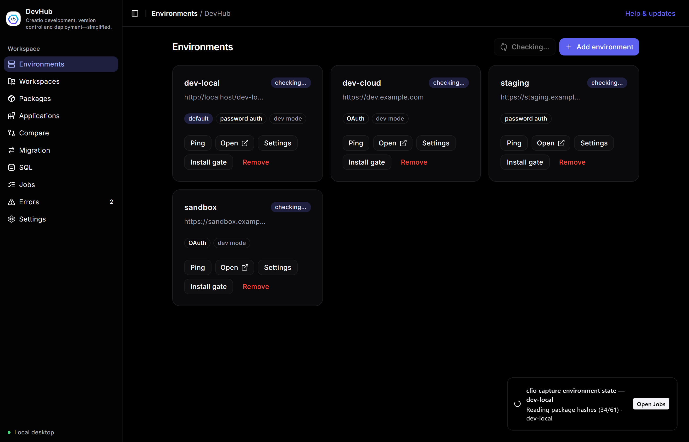
Errors badge shows unread failures.Environments
Every Creatio instance you work with — local, dev, staging, cloud — as a card you can act on.
Each card carries the environment’s URL, its auth kind (OAuth or password), and tags for default and dev mode. The buttons on every card:
- Ping — check the instance is reachable and you are authenticated.
- Open — launch the Creatio app in your browser.
- Settings — change the URL or credentials.
- Install gate — install/update cliogate, required for SQL, lookup capture, and object inspection.
- Remove — unregister the environment from clio.
Use Add environment (top-right) to register a new one. The card marked default is the one DevHub pre-selects everywhere else — you set it here or in Settings.
Workspaces & Git
A workspace is a local, Git-tracked folder holding Creatio package source. Pull from Creatio, commit, push to Creatio, and sync with GitHub.
The list shows each workspace with its environment, branch, remote status, and how many files are uncommitted. Two buttons up top: New workspace (create one — empty, or seeded from packages) and Deploy from GitHub (clone a repo and push it straight into an environment). Click Open on a card to enter its detail view.
Inside a workspace
The detail view is where day-to-day version control happens. Along the top: Add package, Pull from Creatio (fetch the latest package source), and Push to Creatio (pack and install back). Three tabs organise the rest:
- Changes — every modified/added file with its status (
M,A). Click one to see its diff on the right. Type a message and Commit. - Packages — which packages this workspace version-controls.
- History — the commit log, plus GitHub wiring: pick or change the remote repository, and push your branch.
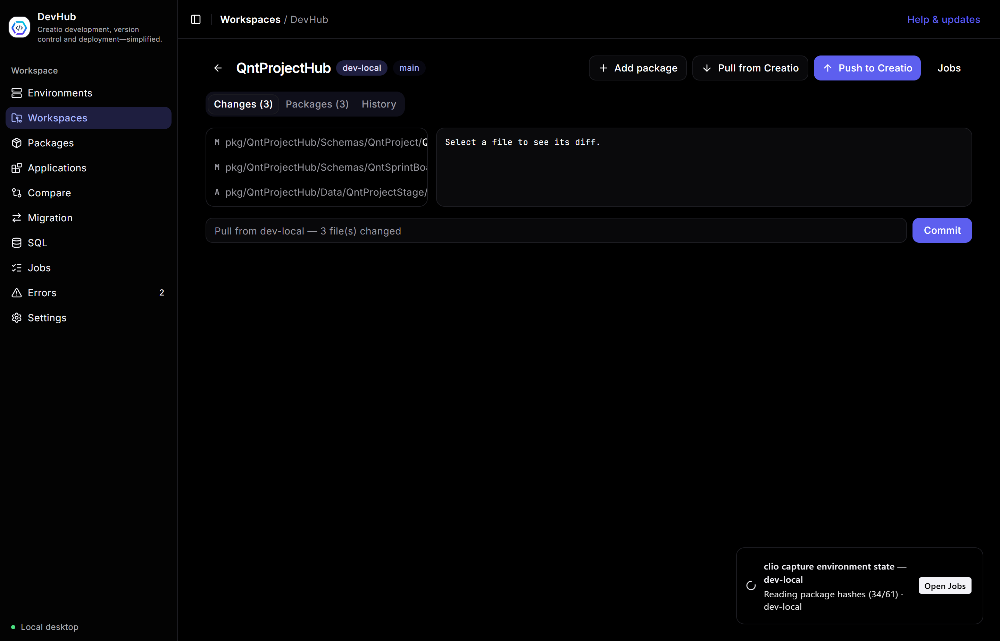
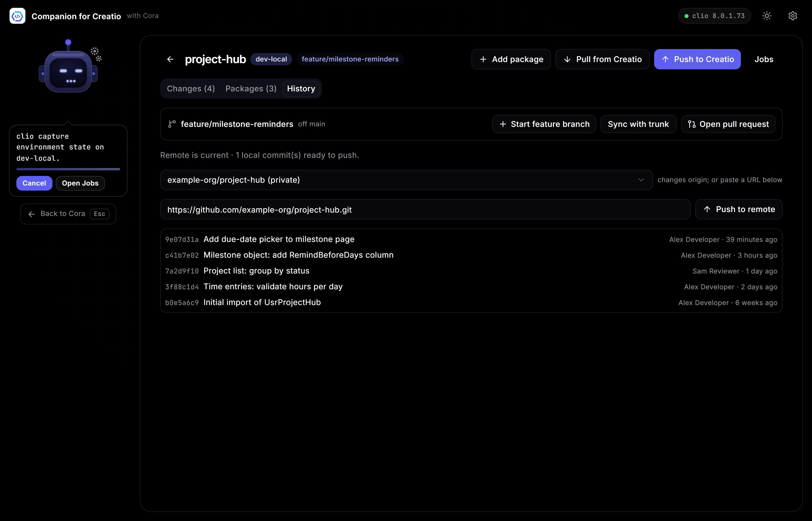
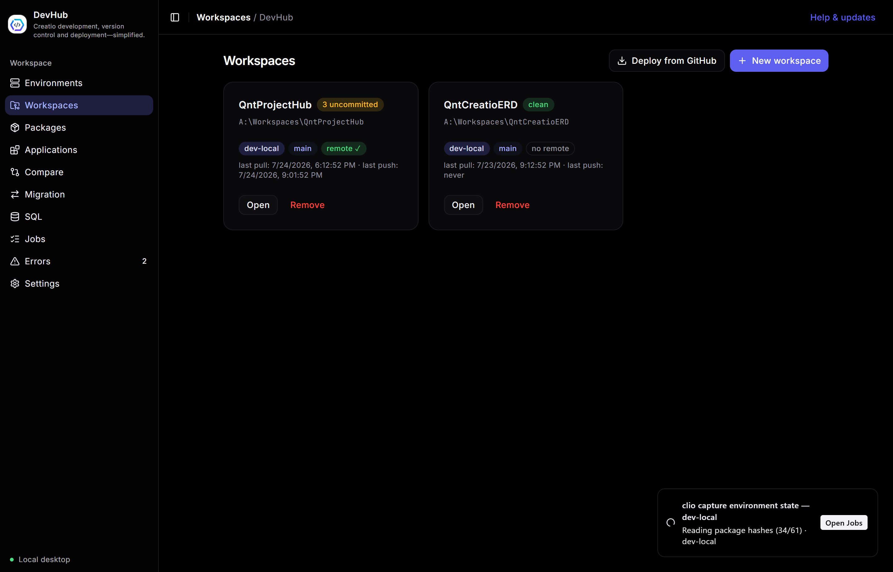
Packages
Browse every package in an environment, act on it, and move it between environments.
Pick an Environment and, optionally, filter by name or maintainer. The table lists each package’s version, maintainer, and lock state. Per-row actions:
- Pull — download the package source.
- Add to workspace — bring it under version control in a workspace.
- More — lock / unlock, activate / deactivate, hotfix, bump version, delete, and deploy to another environment.
The Install archive button (or the drop zone) installs a .zip/.gz package.
Data comes from a fast local cache; Refresh re-reads the environment.
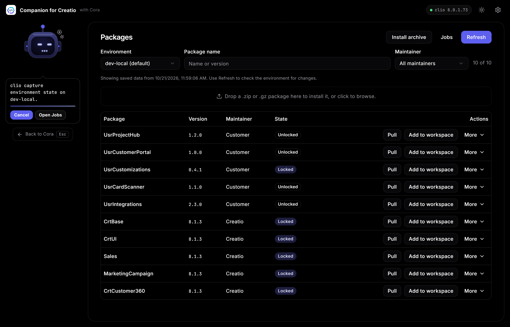
Applications
Creatio applications — the descriptor-level unit that bundles several packages — as rich tiles you can drill into and deploy.
Each tile shows the app’s code, version, description, developer, package count, required platform version, and last update. Deploy to environment… transfers the whole application (all its packages) to another registered environment — different from deploying a single package on the Packages screen.
Details drill-down
Details opens a dialog with everything clio’s list omits: created/modified/installed
dates, support link, schema prefix, hidden/update flags, the full package list, and the app’s
pages with the base schema each extends.
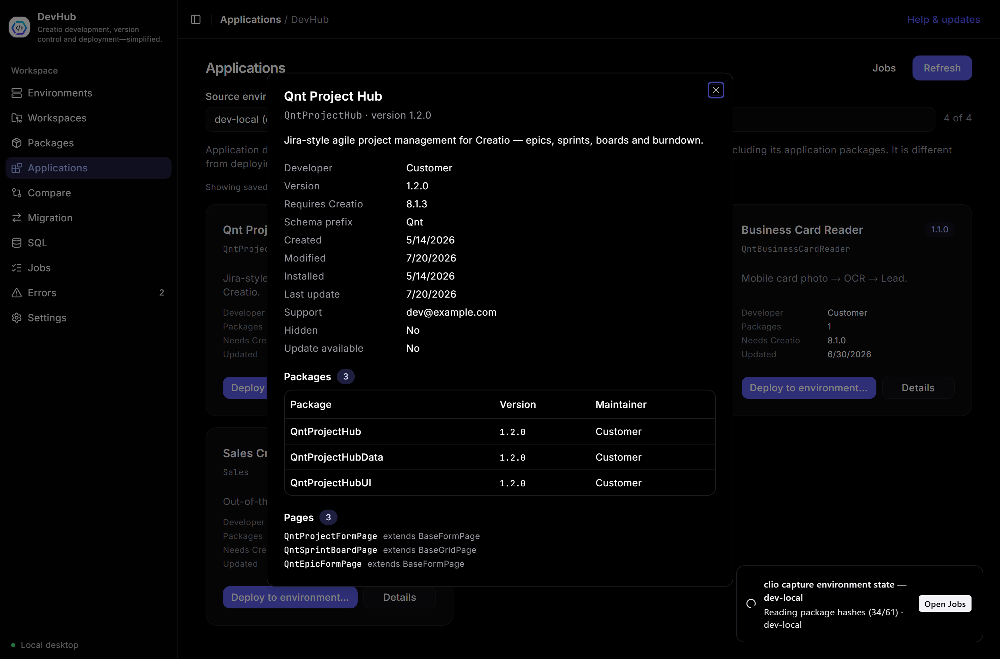
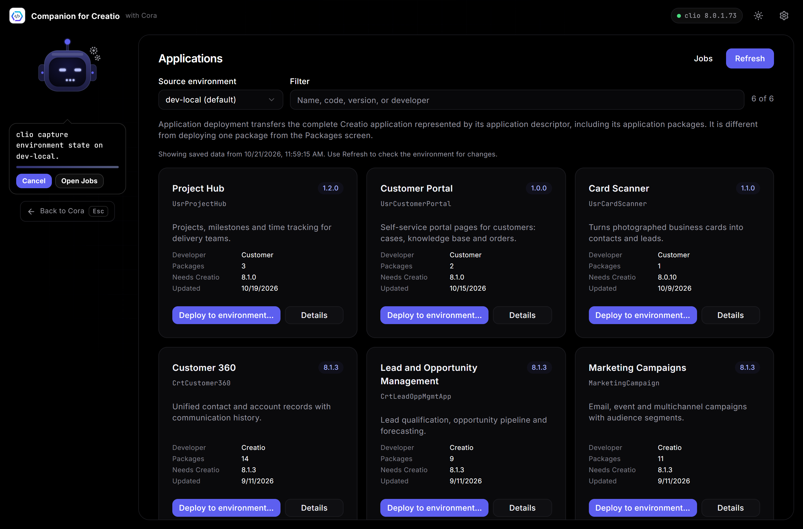
Compare environments
See exactly how two environments differ — packages, settings, features, web services, and reference data.
Comparison runs against saved snapshots, not live instances, so it is fast and read-only — nothing here writes to any environment. Two tabs: Configuration and Lookups.
1Capture, then compare
Choose a Source and Target. Each side shows when it was last captured and how long that took; use Re-capture to refresh. Then press Compare.
2Read the diff
Results group by category — Packages, Settings, Features, Web services. Each row shows the value on each side and a status pill: Differs, Only in source, or Only in target. Package rows expand to the schema level. Tick Differences only to hide matches, and Export report… to save the comparison.
Setting values can include secrets. Snapshots store them as captured, so values stay hidden until you reveal them, exported reports omit them entirely, and Delete removes the stored snapshot file.
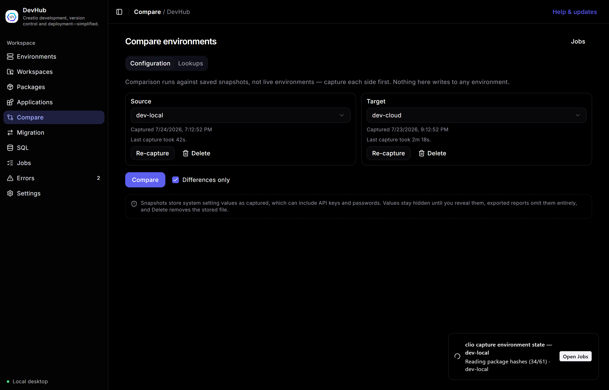
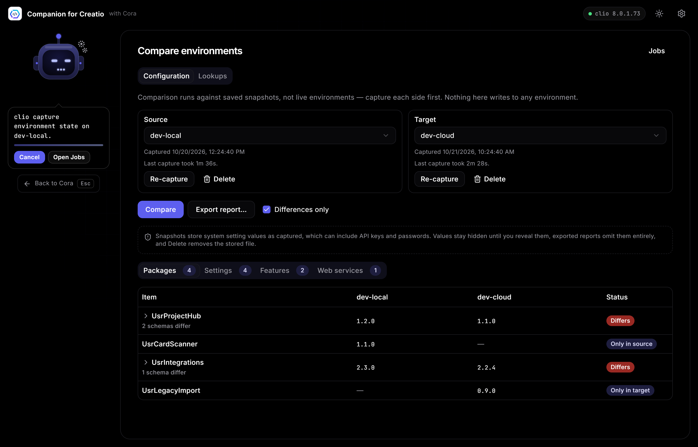
Migration
Move data — not just packages — between environments. Two modes: reference-data lookups, and individual object records.
Lookups
Copies lookup (reference-data) values from a source environment to a target. Rows are matched on their Id,
so migrating updates existing rows and adds missing ones without breaking references other records rely
on. Pick source and target, tick the lookups to move (or Select all shown), then
Preview SQL to inspect the exact upsert, or Migrate to apply it. To see what differs
first, use Compare → Lookups.
Objects
Inspect and copy a single object’s rows. Search for an object (Lead, Contact, QntProject…), and DevHub shows its
row counts on both sides, its columns with types, and its
foreign-key dependency hierarchy — expand a row to walk further down; cycles are marked. Copy runs as a
full-column upsert keyed on Id. Remap ownership to the target’s Supervisor rewrites
owner/created-by columns so references don’t break across environments.
Migrating writes to the target. Unless you turn it off, DevHub first records a runnable rollback script (its path is logged in the job) so the change can be undone. One object at a time — related objects it depends on are not pulled along, so make sure the target already has them.
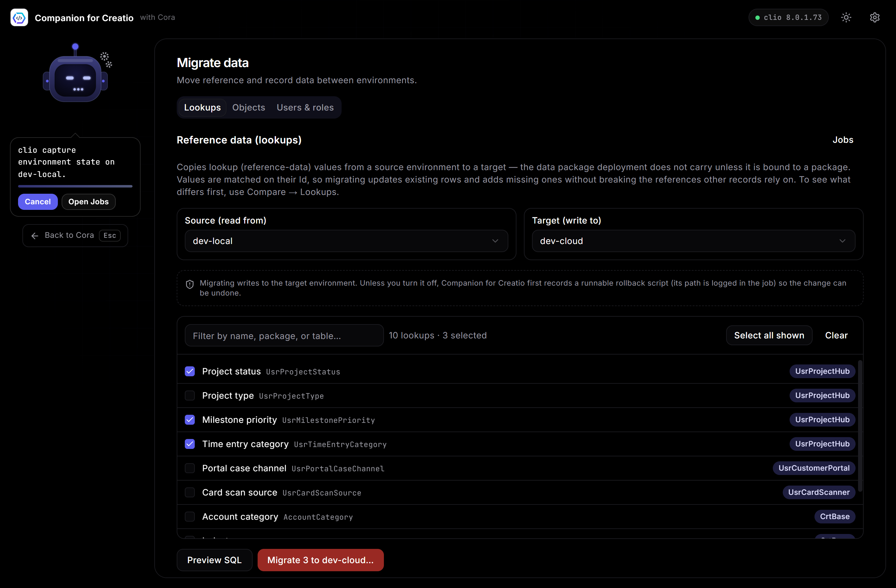
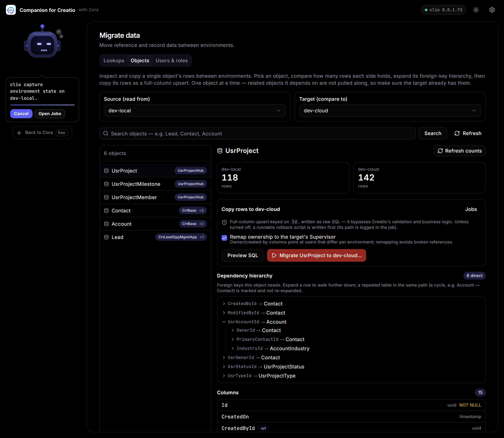
SQL
Run raw SQL against a Creatio database and export the result — with the guardrails you’d want.
Choose an Environment (it needs cliogate), write your query, and press Run — or Ctrl/⌘ + Enter. Results show as a grid with row and column counts. Export the full result to CSV or Excel (the on-screen grid caps at 5,000 rows; export does not). Name and Save query to reuse it from the Saved queries tab; failures collect in the Errors tab.
This runs directly against the database. UPDATE / DELETE are not sandboxed — there is no undo. Read twice before you run a write.
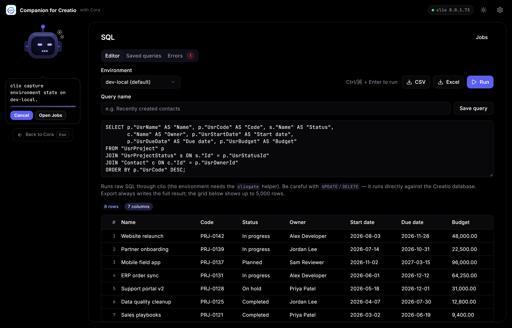
Jobs
Everything DevHub runs in the background — captures, deploys, pushes — with live logs and safe cancellation.
Long-running work becomes a job so the UI never freezes. The list shows each job’s kind, environment, and duration. Select one to watch its phase and stream its log line by line. A running job can be cancelled safely — DevHub stops the underlying process and its children, leaving no orphans. Clear history tidies finished jobs; the running one stays.
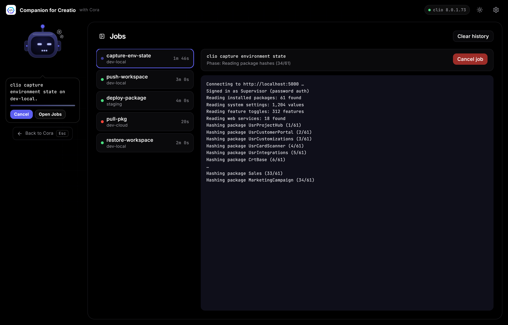
Errors
Every failure across DevHub, collected in one place — each with its cause and how to fix it.
When a run or action fails, it lands here (most recent first) instead of vanishing in a toast. Filter by the screen
that produced it — Migration, SQL, and so on. Each entry shows the environment, a
timestamp, the underlying message (often with its SQLSTATE, e.g. 23503 for a foreign-key violation), and the
offending input. Dismiss one or Clear all. Entries are stored on your device.
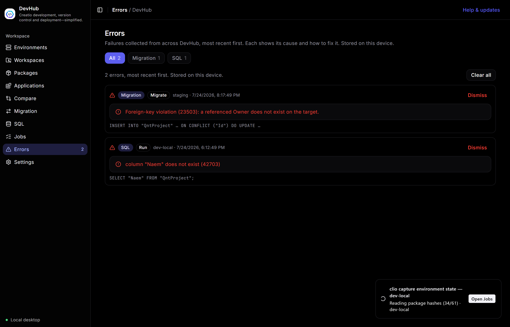
Settings
Your environments, identity, appearance, and the CLI tools DevHub drives.
- DevHub updates — DevHub checks for signed releases automatically; Check for updates forces it now.
- Appearance — System, Light, or Dark. System follows your OS setting.
- Default environment — the instance DevHub pre-selects across every screen.
- GitHub & Git identity — which account pushes over HTTPS (browser or a personal access token), plus the author name/email recorded in new commits. Tokens go straight to the GitHub CLI — DevHub never stores or logs them.
- Command-line tools — where DevHub resolved
clio,git, andgh. Locate… pins a custom path; Re-scan searches again.
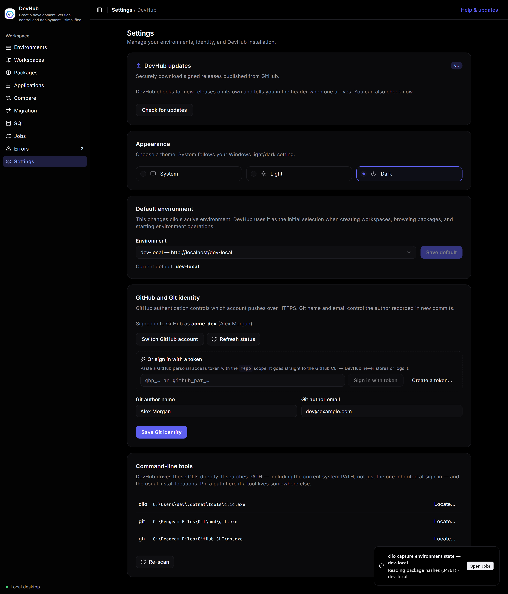
Safety & updates
The habits DevHub builds in so a bad click doesn’t become a bad day.
- Signed auto-updates. DevHub only installs releases signed with the project key. A new version shows as a header banner; you choose when to install.
- Backups before writes. Deployments and migrations record a rollback/backup first (its path is logged in the job) unless you explicitly skip it.
- Typed confirmation. Destructive or cross-environment actions make you type the target’s name — so the intended instance is never a guess.
- No stored credentials. DevHub keeps no passwords;
clioowns them, and DevHub never surfaces raw credential values. - Nothing is proxied. It is a local desktop app — it talks to your environments and GitHub directly.
Found a gap in this guide, or something behaving differently? Open an issue — every report shapes what gets fixed next.